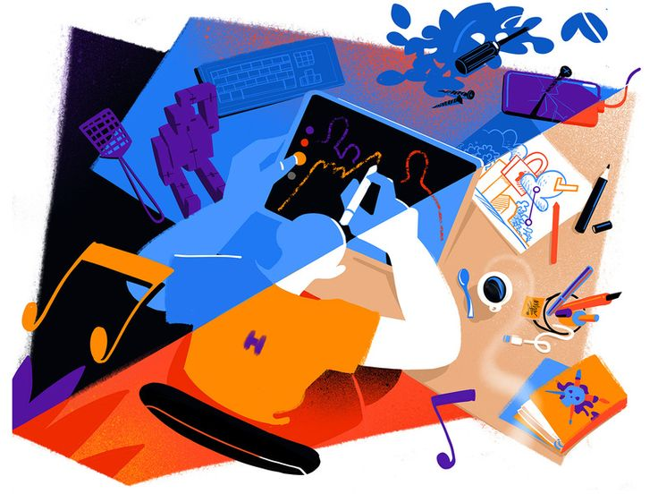

How is a product idea generated?
At this point, I’ve successfully used prompt engineering to guide the LLM in generating valuable insights and ideas that support brainstorming. However, I found these ideas to be fragmented and overwhelming. This raised two key questions for me: How much can AI-generated insights truly spark human creativity? And what type of information, delivered in what format, would be most helpful for ideation? These are the main questions I’ll explore in this post.

To dig deeper, I reached out to people with experience in the creative field to hear their thoughts and perspectives on the ideation process.
Before the conversation, I prepared a short list of questions to guide the discussion. Gaining these insights would help me build a solid foundation for the core ideology behind the AI ideation product and clarify how it can truly support and enhance human creativity.
- What does your brainstorming process usually look like? Can you recall how some of your best or most satisfying product ideas were generated?
- AI can be really good at constructing connections and generating fresh perspectives. What kind of support would you find most valuable during your creative process?
- (After engaging in a 10min individual brainstorming exercise) Please take a look at these AI-generated ideation support, would you find them helpful? What improvements can be made here?
Insights from the conversations
After speaking with several friends and classmates, I noticed some consistent patterns in how people approach ideation. These patterns offered valuable insights that pushed me to rethink the overall direction of the tool and start seriously considering product–market fit.
Initially, my focus was solely on improving the quality of ideas generated by AI. After a few iterations, the LLM’s output did improve—especially in terms of novelty and feasibility. I also developed a standardized brainstorming workflow, where the LLM now offers clear, structured guidance to support human ideators and open up more creative directions.
However, once I began talking to people, I quickly discovered a major challenge: there’s currently no strong product–market fit for this tool. Even though AI has the potential to expand possibilities and offer fresh perspectives, many human ideators either don’t trust the results—believing they’re too generic—or are highly confident in their own thinking and feel they don’t need AI assistance.
Admittedly, AI’s exceptional processing power does help broaden the scope of brainstorming and boost overall creativity. But the real challenge isn’t about pushing the technical capabilities further—-it’s about understanding human nature and figuring out how to frame this tool in a way that truly empowers human creativity. At this stage, the focus has shifted from expanding what the tool can do to deeply exploring how it fits into real creative workflows.
Ideas take shape through unconventional associations
To get started, I want to talk about how an idea is formed. Regardless of the type of idea or the background of the person generating it, the core of an idea often hits us like a flash—Why not build a tool that frees our hands? Why not design a product that perfectly solves this pain point?
As someone who has spent a lot of time developing this ideation tool, I hate to admit it, but the truth is: founders and project enthusiasts rarely seek AI’s help during the early spark of an idea. That initial moment of inspiration feels personal, intuitive—even sacred—and many prefer to trust their own instincts rather than rely on a machine to ignite that spark.
But does that mean AI has lost its role in brainstorming? I don’t think so. Reflecting on both my own and my friend’s brainstorming experiences, we realized that we often rely on random external sources to reframe or elevate an idea—transforming it into something unusual, unconventional, or unique. The initial spark is undoubtedly precious, but what truly makes an idea stand out is its ability to bridge two seemingly unrelated concepts in an unexpected way. Here’s something my friend said during our conversation about brainstorming that really stuck with me:
“When I need to come up with an idea, I usually start with a vague direction—-some guiding points or principles. After that initial concept-driven stage, I often revisit my archive of other people’s ideas or products—-I’ve bookmarked a lot of interesting tweets and websites. I also like to talk to friends to spark more unexpected insights.”
In short, ideas often take shape through unconventional associations. The same insight is also brought up by Ethan Mollick in his book Co-Intelligence: Living and working with AI. However, these associated concepts don’t emerge from random combinations—-they require careful, thoughtful connections, and it’s both rare and challenging to pinpoint the most fitting ones. From my perspective, this is one of the most valuable opportunities for AI to assist—-helping uncover unexpected yet relevant connections that might otherwise be overlooked.
“My idea seems promising, but people are not using it.”
Another valuable insight came to me during a conversation with a friend who had worked on several development projects and gathered feedback from both web and mobile app launches. She shared her frustration about being initially excited about her idea, only to receive lukewarm user feedback. I could immediately relate—this is a common dilemma among developers, and I’ve faced similar situations multiple times.
Given AI’s strengths in pattern recognition and refining presentations, another thought crossed my mind: Why not use AI to help identify and validate product–market fit? This is something that’s often beyond the reach of individual intuition or experience, but AI—armed with a large dataset of successful and unsuccessful products—might be able to spot patterns and predict viability far more effectively.
Building a dataset like that would be a major undertaking and likely more time-consuming than it seems, but I wanted to document this idea for future exploration.
AI’s strengths in presenting and organizing
Finally, as we all know, AI is an incredibly helpful assistant when it comes to organizing and structuring information—not to mention refining language for things like idea pitches. Brainstorming can often feel chaotic and overwhelming, which is why organized note-taking is essential for making sense of seemingly scattered ideas.
But that raises more questions: How should these ideas be organized? In what format? There’s still a lot of detail worth exploring here, and it’s an area I plan to dig deeper into in the future.